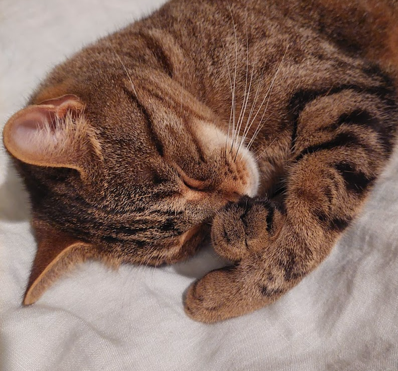
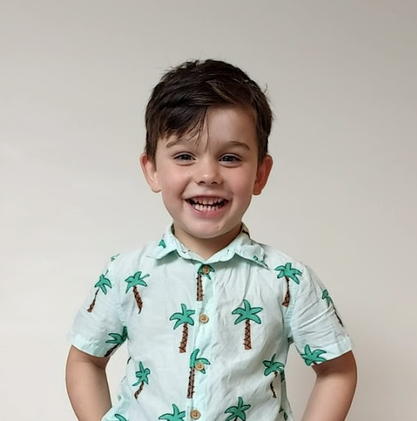

Robbie's Testimonial
Good dog. Can't leave food around unattended, but she is pretty good on walks.
10/10 would recommend walking again. I've known her for awhile now and although she doesn't pay rent,
she makes up for it with her fluffiness. She enjoys a good nap and is a good cuddling buddy when it's on
her
terms and she is cold. She will lick your face if you are too close, just a warning.
All around good dog.
Ellie's Testimonial
Peanut is snuggly. I like going on walks with Peanut, and riding my bike with
her around the lake. Peanut gives me kisses and lets me cuddle her when I'm sad.
I love feeding her carrots as treats and watching her do tricks. My favourite trick Peanut does is
'roll-over,'
she's very good at it. She is a good girl and I love her.

Wobble's Testimonial
Meow meeeooowww meoow mew trill purrr meowwww
meow trilll purrr purr meow meeeow meooow mew.Meow meeeooowww meoow mew trill purrr meowwww
meow trilll purrr purr meow meeeow meooow mew. Meow meeeooowww meoow mew trill purrr meowwww
meow trilll purrr purr meow meeeow meooow mew.

Theo's Testimonial
Peanut is fluffy. I like that she sleeps on my bed and every time we
come home from places we can see her waiting for us through my window.
She makes me feel happy when she gives me kisses and I give her pats.
I love sitting and watching TV on the couch with Peanut, but sometimes she snores.
I like going for walks with Peanut by the lake. She is my favourite fluffy dog.